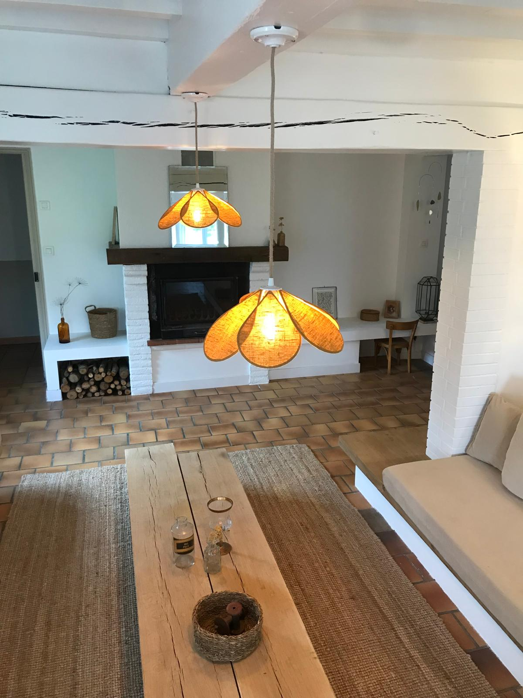
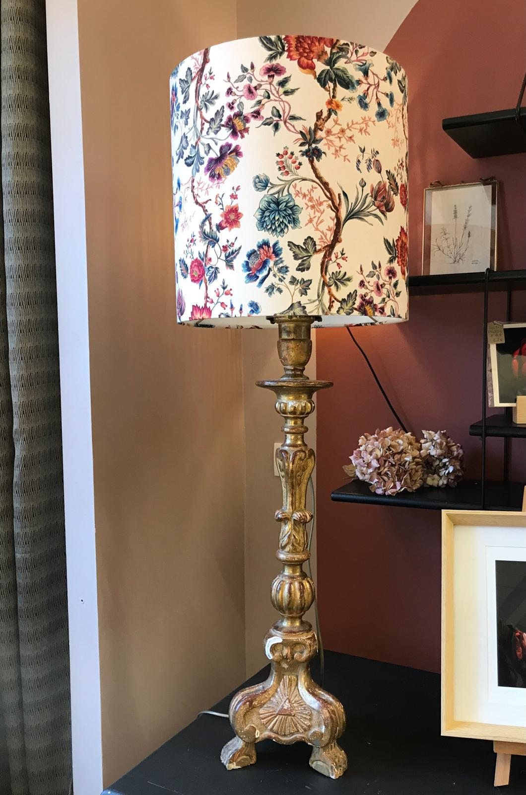
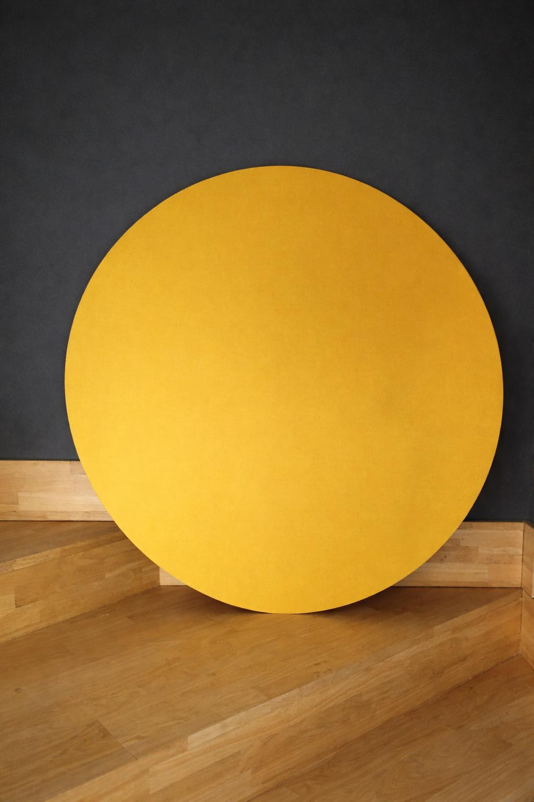

Sur mesure
Abat-jour pour pied de lampe, suspensions et appliques.
Fabriqué à la main en France
Voir la galerieAbat-jour artisanaux · Création & restauration
Hélène Bertrand
Fabrication d'abat-jour, de suspensions, d'appliques sur mesure pour un éclairage personnalisé.
Ouverture de l'atelier
Mardi, jeudi et vendredi de 14h à 19h
Mercredi de 14h à 17h30
Sur rendez-vous le matin du mardi au vendredi
Savoir-faire
L'atelier réunit le sur-mesure, la rénovation et des créations pensées pour donner de l'originalité à votre intérieur.
Abat-jour pour pied de lampe, suspensions et appliques.
Fabriqué à la main en France
Voir la galerieRénovation d'abat-jour anciens ou remise en état d'une pièce existante.
Conserver l'âme d'un objet
Voir la galerieLampes, coussins, décorations murales.
Pièces originales en petites séries.
Voir la galerieL'atelier
Comprendre l'utilisation, l'atmosphère souhaitée et la place du luminaire dans la pièce.
Travailler la ligne, le volume, la matière et l'équilibre pour obtenir une pièce juste.
Assembler à la main avec soin et attention.
« Un luminaire ne se contente pas d'éclairer. Il installe une humeur, un rythme, une douceur. »
Galerie
Quelques pièces représentatives pour découvrir l'univers de l'atelier avant de parcourir la galerie complète.



Contact